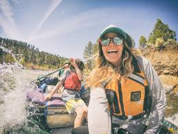

DYKES WATER RAFTING COMPANY
Dykes Company is dedicated to helping clients fully experience and enjoy the beauty of the world’s adventures. Our mission is to provide safe, exciting, and memorable outdoor experiences while promoting environmental stewardship and fostering a deeper connection to nature. Our motto, “A happy you, a happy me,” reflects our commitment to creating joy and satisfaction for every client.